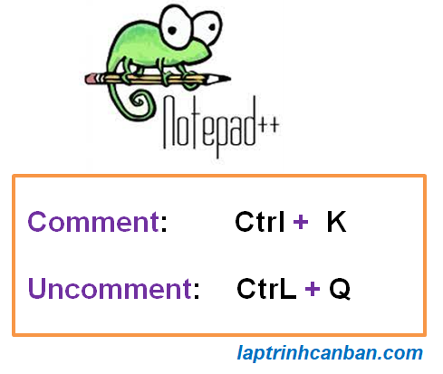
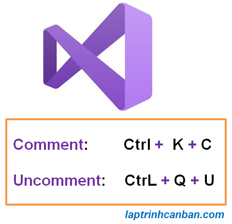
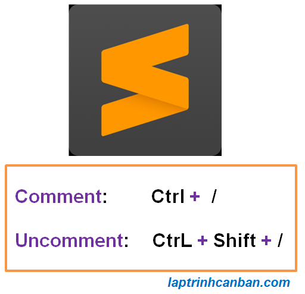

Pythonのコメントの書き方について説明します。この記事を通じて１行のコメントの書き方や複数行のコメントの書き方やPythonのコメントアウトの仕方などを学びましょう。
Pythonのコメントとは
PythonのコメントとはPythonプログラムの実行時に省略されるコード行であり、プログラムの作成日時、作成者の名前、作成目標、プログラムのサブアイテムの説明などの必要な情報を保存するのに役立ちます。
Pythonのコメントによって保存された必要な情報は、プログラムの保守を容易にするだけでなく、プロジェクトを他の人に移管したり、プロジェクトを多くの人と共有したりするのも簡単になります。
Pythonのコメントの書き方
Pythonのコメントは、#を使用します。#の後にコメントの内容を記載します。Pythonのコメントの文法は以下です。
#コメント
ここでの コメントとは、#の後に記載されるコメントの内容です。
Pythonのコメントとは「#」から行の終わりまでカウントされます。次の例のように、コードの最初や途中など、または任意の場所にコメントできます。
## |
注意点としては、例のように一つのコードが複数行で記述されている場合、コードの途中でのコメント挿入が出来ません。
num = 1 + 2 + 3 + 4 \ #この位置ではコメントできません。 |
SyntaxErrorのエラーは次のように表示されます。
File "Main.py", line 1 |
- Pythonでの改行コードと一つコードの複数行の記述方法については、Pythonでの改行コードの記事を参照してください。
Pythonの複数行のコメントの書き方
Pythonで複数行のコメントを記述するには三連引用符を使います。三連引用符とはダブルクオーテーションまたはシングルクオーテーションを３つ続けた記号です。例えば"""とか、'''とかがあります。
以下のように複数行の文章を三連引用符で囲むことでコメントになります。
次の構文で書きましょう。
"""
コメントライン１
コメントライン２
コメントライン３
…"""
'''
コメントライン１
コメントライン２
コメントライン３
…'''
この書き方の本質は、Pythonで複数行の文字列を宣言しただけで、宣言された文字列に処理命令を追加しないことです。
したがって、新しく作成された複数行の文字列は、プログラムの処理結果に影響を与えることなく、情報を格納する効果しかありません。それで一応のコメントとみなされます。
複数行の文字列を宣言する方法については、Pythonで文字列を宣言する記事の詳細を参照してください。
この三連引用符を使用して、次の例のようにPythonの複数行のコメントを書きましょう。
""" |
この書き方はGihubのドキュメントやAIプログラミングプログラムでど頻繁に使用されています。
尚、この方法を使用する場合、すべてのコメント行に同じインデントを付ける必要であることに注意してください。1つの行だけにも他の行とは異なると、次の例のようにpythonの複数行コメントのエラーが発生します。
for i in range(3): |
上記のfor文の印刷行とコメントのインデントは同じではないため、次のエラーが返されます
File "Main.py", line 8 |
その理由はprint("Pythonの複数行のコメントの書き方")の行のインデントは上下の2つの印刷行のコメント行のインデントと同じではないためです。
次のようにインデントを修正する必要があります。
for i in range(3): |
各行のインデントは同じであるため、forループの結果は次のようにスムーズに実行されます。
Pythonの複数行のコメントの書き方 |
Pythonのコメントの適用
Pythonでコメントを使用して情報を保存する
長すぎるPythonプログラムを作成する必要がある場合、または多くのPythonプログラムを組み合わせたプロジェクトを作成する必要がある場合は、Pythonでコメントを使用して、プログラムの作成日時、作成者の名前、作成などの必要な情報を格納する必要があります。例えば目標やPythonプログラムのサブアイテムの説明などといった情報です。
プログラムがクラッシュし、エラーを修正するためにプログラムのどこかに戻って検討する必要があるが、コマンドラインの意味を覚えていないと非常に困ると思います。コメントを使うことで、そのコードの意味などすぐ分かり、コードの修正がはるかに簡単になります。
特に、多くの人がプログラムの作成に関与している大規模なプロジェクトでは、コメントを付けることで、チームメートがプログラムの各部分をよりよく理解できるようになります。
新しい誰かがプロジェクトに参加したと仮定すると、それを彼らに説明するのにそれほど労力はかかりません。コメントを読んで、自分でいじくりまわしてくださいとい言えばですね。
コメントを使用して処理をスキップ | コマンドラインのコメントアウト
Pythonでコメントを使用して必要な情報を格納するだけでなく、コメントを使用してPythonプログラムの処理をスキップすることもできます。これはコメントアウトと呼ばれています。
コメントを使用してPythonで処理をスキップする方法は、次の例のようになります。
print("おはよう") |
上記のプログラムを実行すると、次の結果が得られます。
おはよう |
2番目のコマンドラインを実行したくない場合は、削除できます。ただし、このコマンドラインを一時的に実行したくない場合は、コマンドラインをコメントアウトし、プログラムを処理するときに2行目を無視してください。
print("おはよう") |
2行目のコマンドラインをコメントアウトにすることで、プログラムの処理時にその行を省略しました。したがって、コマンドライン1と3のみが処理され、返される結果は次のようになります。
おはよう |
Pythonのコメントショートカット
使用するPythonのエディタに応じて、以下のような異なるキーボードショートカットがあります。
Notepad ++のコメントショートカット

コード行を選択した後、次のキーの組み合わせを使用してNotepad ++でコメントできます。
- Ctrl + K: 選択したコード領域をコメントに変換
- Ctrl + Q: 選択したコード領域のコメットを解除
Phím tắt comment trong Visual Studio

コード行を選択した後、次のキーの組み合わせを使用してVisualStudioでコメントを付けることができます。
- Ctrl + K + C: 選択したコード領域をコメントに変換
- Ctrl + K + U: 選択したコード領域のコメットを解除
Phím tắt comment trong Sublime text 3

コード行を選択した後、次のキーの組み合わせを使用して、Sublime text3にコメントを付けることができます。
- Ctrl + /: 選択したコード領域をコメントに変換
- Ctrl + Shift + /: 選択したコード領域のコメットを解除
まとめ
上記で、KiyoshiはPythonでコメントを付ける方法を示しました。レッスンの内容をよりよく理解するために、各例文を使って練習してください。
そして、次のレッスンでPythonの知識についてもっと学びましょう。
HOME>> python基礎 初心者向けのpython学習>>03. pythonの基礎知識